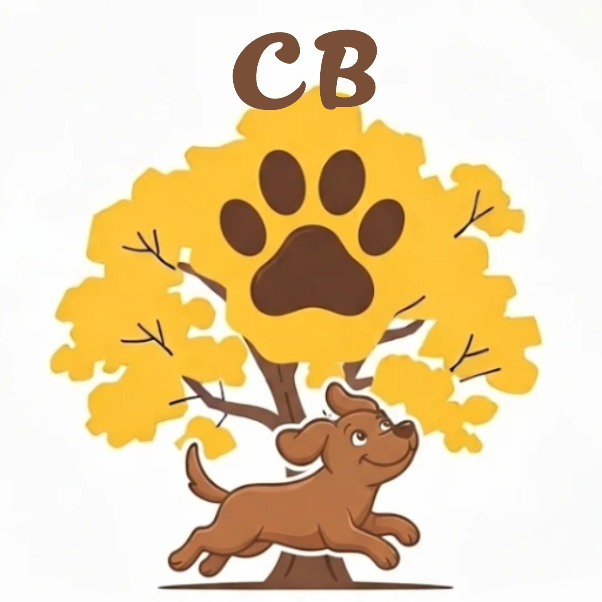

Viu um animal abandonado, ferido, em risco ou oferecendo risco a pessoas? Avise a prefeitura.
Registre em poucos minutos e receba um protocolo para acompanhar o atendimento.
Registrar incidenteOutros serviços
Acompanhar registroUse seu protocolo e código Castração gratuitaInscreva seu cão ou gato Adotar um animalConheça quem espera um lar Ser lar temporárioAcolha um animal até a adoçãoEm breve: ONGs e protetores · Empresas e doações